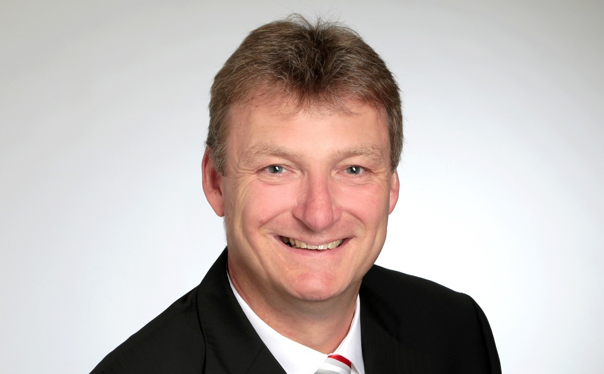
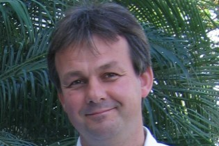

Binational Board
Chairs
 Dieter Bathen (German Chair). Dieter Bathen is full professor at the University of Duisburg- Essen and scientific director at the Institute of Energy and Environmental Engineering (IUTA e.V.). Since 2014 he is also CEO of the Johannes-Rau-Forschungsgemeinschaft, the research organisation of the federal state of Northrhine-Westphalia.
Before that he worked for several years in industry (Degussa AG, today Evonik AG). Since 2010 he is the chairman of the ProcessNet working group adsorption (DECHEMA-VDI). His research focuses on the characterization of adsorbents and on adsorption processes, especially the removal of toxic and hazardous trace compounds from gases and air, e.g. mercury, hydrogen sulfide, anaesthetic gases, VOCs. His aim is to link surface chemistry and thermodynamics with process engineering and simulation.
Dieter Bathen (German Chair). Dieter Bathen is full professor at the University of Duisburg- Essen and scientific director at the Institute of Energy and Environmental Engineering (IUTA e.V.). Since 2014 he is also CEO of the Johannes-Rau-Forschungsgemeinschaft, the research organisation of the federal state of Northrhine-Westphalia.
Before that he worked for several years in industry (Degussa AG, today Evonik AG). Since 2010 he is the chairman of the ProcessNet working group adsorption (DECHEMA-VDI). His research focuses on the characterization of adsorbents and on adsorption processes, especially the removal of toxic and hazardous trace compounds from gases and air, e.g. mercury, hydrogen sulfide, anaesthetic gases, VOCs. His aim is to link surface chemistry and thermodynamics with process engineering and simulation.
Benoit Coasne (French Chair). Benoit Coasne is CNRS Research Director in Grenoble, France. He is also currently appointed Senior Scientist Councelor for Veolia Water Technologies. During a 3 year visiting stay, he was leading fundamental research group on multiscale modeling of adsorption and transport in the CNRS/MIT lab at MIT in Boston (2012/15). Benoit Coasne was Cofounder and first President of the French Adsorption Society. Dr. Benoit Coasne’s research on adsorption, confinement, and phase transitions in porous materials cover a broad range of confined systems from atoms, molecular fluids, electrolytes/ionic liquids, and solids.
Members
 Frieder Dreisbach. Frieder Dreisbach is Director of Product Management for sorption analyzers and dilatometry at Waters’ TA Instruments division in Germany. Previously he led product management and application of gravimetric sorption analyzers with magnetic suspension balance at Rubotherm. Frieder Dreisbach is the current vice-chair of the DECHEMA working group on adsorption. He is elected fellow of the International Adsorption Society, served for 6 years on the board of directors of the society and was member of the editorial board of the Adsorption Journal. He authored or co-authored more than 40 peer-reviewed publications and holds patents about innovations in analytical technology.
 Cecile Vallieres. Cecile Vallieres is Professor in Chemical Engineering in Nancy, France.
She is also currently director of the European School of Chemistry, Material and Polymer of Strasbourg since January 2022.
Her research deals with separation and purification processes using porous materials.
Her projects are essentially on the influence of co-pollutants on the performance of the processes and are done as much from an experimental point of view as by modeling.
Cecile Vallieres. Cecile Vallieres is Professor in Chemical Engineering in Nancy, France.
She is also currently director of the European School of Chemistry, Material and Polymer of Strasbourg since January 2022.
Her research deals with separation and purification processes using porous materials.
Her projects are essentially on the influence of co-pollutants on the performance of the processes and are done as much from an experimental point of view as by modeling.
 Matthias Thommes Matthias Thommes obtained his Ph.D in Physical Chemistry in 1993 at the TU-Berlin. From 1992-1995 he was a Project Scientist at the EURECA mission of the European Space Agency (ESA). In 1996, he moved as an ESA fellow/Research Associate to the University of Maryland, College Park, USA. In 1998, he joined Quantachrome Corp. and held from 2001 - 2018 the position of Scientific Director (Boynton Beach, FL, USA). Since 2018 he is full Professor and Head of the Institute for Separation Science and Technology at the University Erlangen-Nürnberg. In addition he holds position of Visiting Professor at the University of Edinburgh (since 2012), U.K and Lorraine University, Nancy, France (since 2017).
Remy Guillet-Nicolas. Remy Guillet-Nicolas is a CNRS researcher at LCS in Caen. Before joining back the academia, he spent four years in industry at Quantachrome instruments. The focus of his research is in the field of (nano)porous materials with tailored and on-demand physico-chemical properties. His main expertise lies in the accurate characterization of hierarchical and/or complex pore architectures using advanced static and dynamic sorption techniques at low and high pressures. Currently, his topics are focused toward the optimization, via reverse engineering, of zeolitic materials through a cutting-edge characterization. He is also an elected member of the internal board of the AFA and the SCF-Normandy.